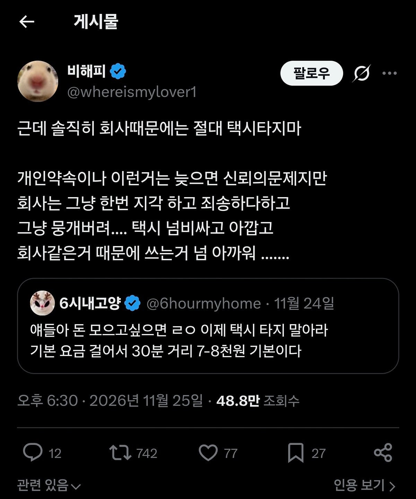

파딱계정ㅋㅋ
일은 할까 궁금하네
1~2년에 한번정도 얘기하는줄알고 그럴수도있겠네 했는데
피치못할지각이 한달에 한번? 제정신인가ㅋㅋㅋ
그 한번이 이미지에 영향을줘..
애초에 니가 일찍 나오면 택시를 탈일도 없잖아
10년동안 회사 다니면서 지각한적이 딱 두번 있는데, 한번은 폭설로 인한 통근버스 고장(단체 지각함ㅋㅋ), 두번째도 폭설로 인한 도로 마비 (걸어서 출근했는데 걍 전체연차 처리하라고 공문옴)
개인적으로 초년생이 아닌데 회사에 지각한다? 사람자체가 폐급으로 보임
난 1년에 택시 한 번 탈까말까인데 진짜 매주, 매일 타는 애들 꽤 많더라 돈이 많던 적던 상관 없이 그냥 탐 심지어 지하철 역까지 걸어서 15분 거리인데 그걸 또 택시 타고 감
유연출근 되는곳에 가면 됨
그게대기업이잖아
타서 지각을 면할수있는게 아니면
반반차가 차라리 나은듯
지각을 한달에 한번하는새끼가 어딨음 ㅋㅋㅋ 루틴이란게 없나
차피 내 연차쓰고 지각처리하는데 요샌 좀 늦게 가도 되지않아?
공가 병가 출장 가지고 뭐라 하는 시대도 아닌데.
너네 은근 꼰대됐네.
쟤는연차도안쓰고 진짜지각하는경우말하는것같은데
우리회사는 째째하게 지각가지고는 뭐라 안해서 좋아
지각 잦으면 그냥 이런거 봐주는 회사를 가는게 만족도가 높을듯
우리도 30분지각까지는 신경안써서 다들 맨날 늦게옴
저런 마인드가 있어야 빈번하게 지각을 하는구나 음음
지각은 습관이다
악질임
나는 3시부터 설사하다가 아침에도 설사했는데 그래도 출근했습니다! 하고 땡함 출근해준게 어디냐
근데 지하철타면 한시간인데 택시타면 50분인경우 있는데 돈 존나아까움.. 택시탈까 그냥 몇분지각할까 고민됨
회사다니면서 한달에 한번 지각하면 그게 사람새낀가...?
택시타면 지각 안할수있다 → 탐
택시타도 이미 지각임 → 안탐
이게 마찌
자차타는데 회사 지각할거같아서 풀악셀 이건 하면 안되긴하는데
이게 회사마다 다 다름
몇몇 좆소는 이게 됨
다들 암묵적으로 지각하는 곳도 봄 ㅋㅋㅋㅋ
평균연령 40~50세 여초(아줌마 대 남자 비율 9.5:1) 인 곳이였어서...
지각이면 반차를 써 ㅂㅅ아
출퇴근 4시간 ㅋㅋ
서울은 자차나 택시보다 대중교통이 빠르지 않나?
걷는구간 많으면 비슷하거나…